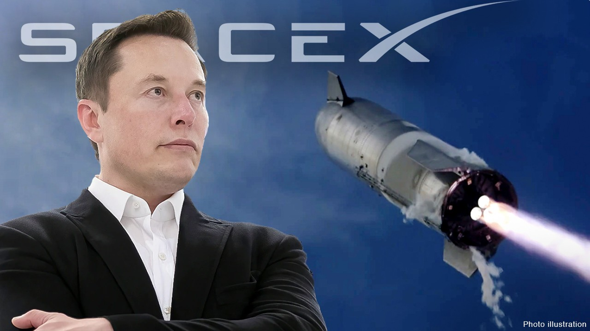
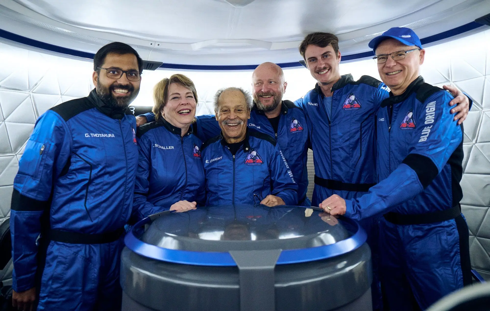

Menu
Historia Lotów Kosmicznych
-

- NASA Amerykańska agencja kosmiczna, która wciąż jest liderem w badaniach kosmicznych. Program Artemis ma na celu powrót człowieka na Księżyc do 2025 roku oraz dalszą eksplorację Marsa.
- SpaceX Prywatna firma kosmiczna założona przez Elona Muska. SpaceX jest pionierem w dziedzinie wielokrotnego użytku rakiet dzięki Falcon 9 i rozwija statek kosmiczny Starship, który ma umożliwić załogowe loty na Marsa.
- Roscosmos Rosyjska agencja kosmiczna, która kontynuuje tradycje Związku Radzieckiego, realizując loty na Międzynarodową Stację Kosmiczną (ISS) oraz rozwijając własne programy badawcze. 
- Blue Origin Firma założona przez Jeffa Bezosa, koncentrująca się na komercyjnych lotach kosmicznych. Jej pojazd New Shepard odbywa suborbitalne loty turystyczne.
W ostatnich latach coraz większą rolę odgrywa turystyka kosmiczna. SpaceX, Blue Origin oraz Virgin Galactic oferują loty suborbitalne dla prywatnych osób, co otwiera kosmos dla szerszej grupy ludzi. Choć na razie loty są drogie, rozwój technologii wielokrotnego użytku rakiet może sprawić, że turystyka kosmiczna stanie się bardziej dostępna.
Strona wykonana przez: Mariusz Karczykowski